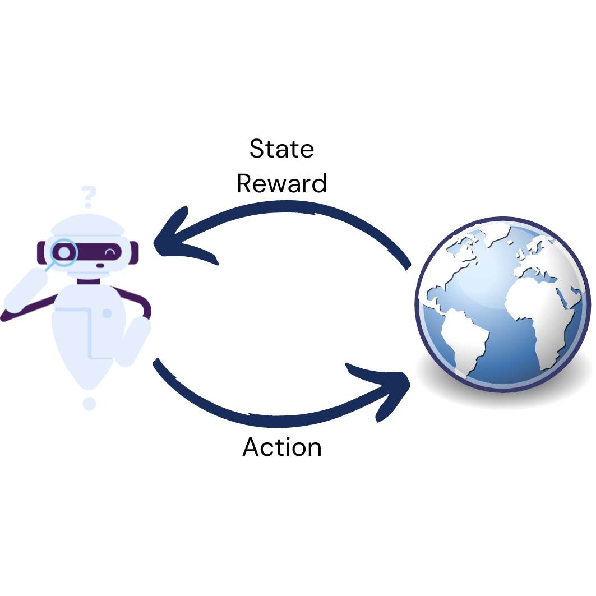
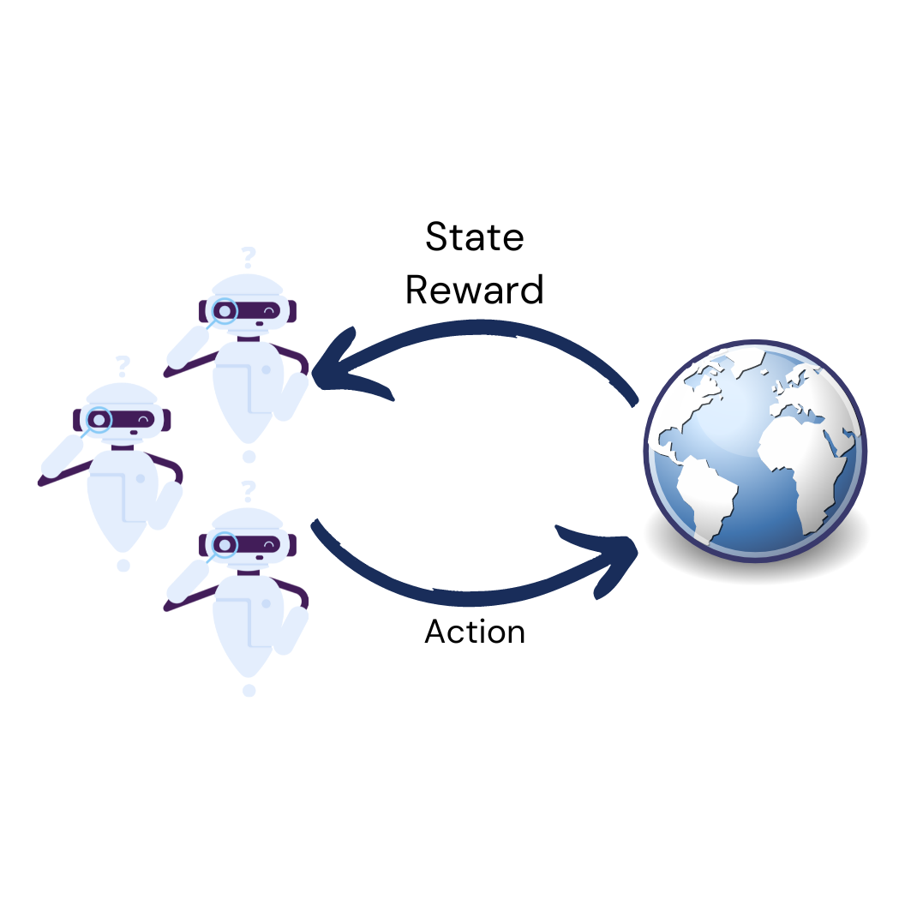
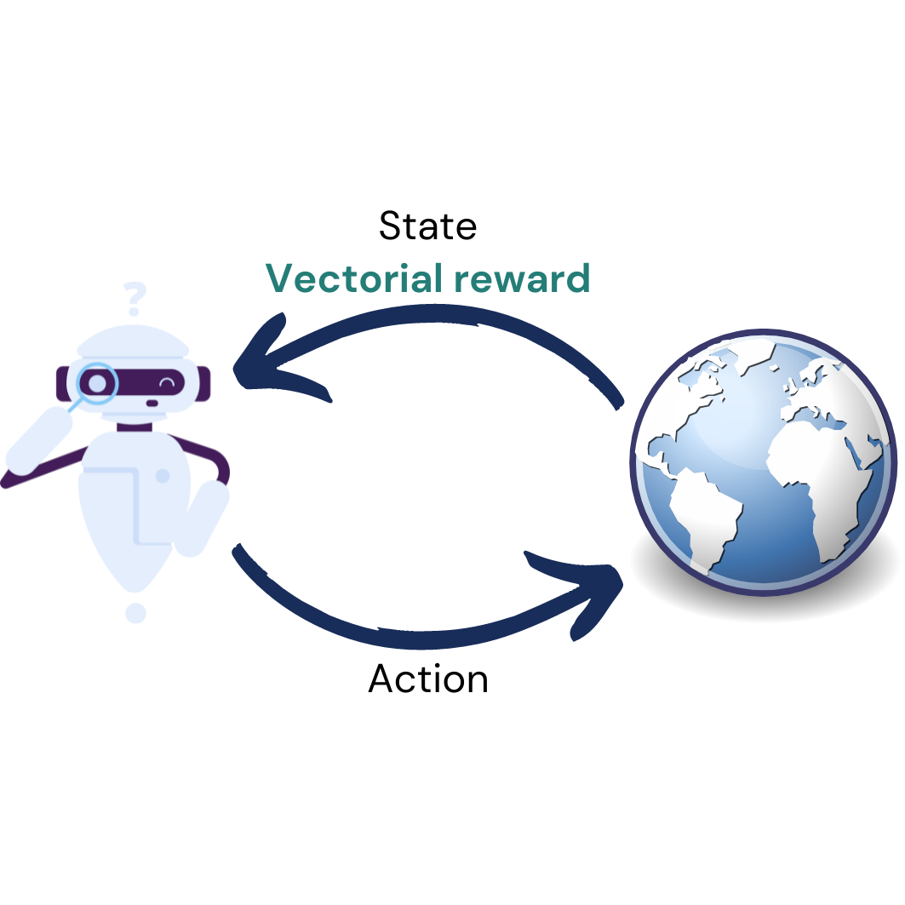
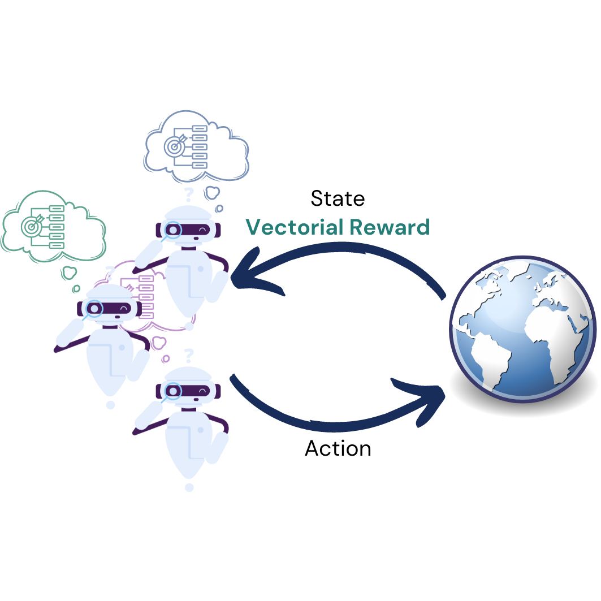

Reinforcement learning is a machine learning paradigm that learns by trial-and-error. An agent tries an action, the world responds with a new situation and a reward signal, and over many such interactions the agent works out a strategy for acting well.
What makes this a powerful paradigm is that no right answer needs to be specified in advance. You describe what counts as good, and the agent discovers how to get there. This suits sequential problems where today’s choice shapes tomorrow’s options and the payoff only arrives much later (e.g., managing a power grid, routing traffic, planning a course of treatment).
However, this also makes the reward signal enormously consequential. Everything the agent comes to value flows from that one number, so an incomplete or careless specification produces an agent that is highly competent at the wrong thing. The standard formulation asks us to compress everything we care about into a single scalar, and together with colleagues I have argued that this is often not enough: Scalar reward is not enough sets out why.

Most interesting decision problems are not solitary ones. Traffic networks, energy markets, supply chains, etc., all involve many agents acting at the same time, each with their own information and their own stake in how things turn out.
This changes the learning problem fundamentally. A single agent faces a world that, however complicated, holds still while it learns. Put several learners in the same environment and as each one adapts, it changes the very problem the others are trying to solve. Convergence guarantees weaken, and “optimal” stops being well defined, because the best I can do depends on what you do.
Much of my work looks at settings where incentives are neither perfectly aligned nor purely opposed, which is where most real systems live. When does cooperation emerge without anyone imposing it? What happens when agents are not even certain whether their incentives are aligned, as we studied in Emergent cooperation under uncertain incentive alignment? And how do communication and commitment change what a group of learners can achieve together?
Game theory gives us the vocabulary for these questions (i.e., equilibria, best responses, social welfare). Learning gives us agents that either find their way to those outcomes on their own, or do not. I am interested in the gap between the two.

Real decisions rarely have a single criterion. A pandemic mitigation policy weighs infections against economic and social cost. A transport plan weighs travel time against emissions and fairness. Collapsing these into one number means deciding in advance exactly how much one matters relative to another. And that is usually a value judgement, not a technical detail.
Multi-objective decision making opens up a different route. The agent receives a vector of rewards, one component per objective, and keeps them apart. Instead of a single optimal policy there is a Pareto front: the set of policies where you cannot do better on one objective without doing worse on another. The trade-off becomes something a decision maker can see and choose from, rather than something buried inside a reward function. A practical guide to multi-objective reinforcement learning and planning covers this in more detail. Actually constructing that front is a challenge in its own right. In IPRO (Iterated Pareto Referent Optimisation) we decompose the problem into a sequence of single-objective ones, which gives us convergence guarantees and, at every step, a bound on how far any still-undiscovered policy can lie.

This setting looks at many agents, each with several objectives, and each with their own view of how those objectives should be traded off against one another. Combining the two is not simply doing both at once. In a single-agent multi-objective problem you can lay the Pareto front in front of a user and let them pick. With many agents there is no single user to ask: every agent has its own utility function, and my trade-off is not yours. Even what counts as a solution has to be rethought: what is an equilibrium when payoffs are vectors and each player scalarises them differently?
Together with colleagues I mapped out this space in Multi-objective multi-agent decision making: a utility-based analysis and survey, which sets out a taxonomy of these settings and the solution concepts each one calls for. The details matter more than one might expect: whether agents optimise scalarised expected returns or expected scalarised returns changes which equilibria exist at all, and under some formulations Nash equilibria are no longer guaranteed to exist.
The field also needed shared ground to build on, which is why we developed MOMAland, an open-source set of benchmarks for multi-objective multi-agent reinforcement learning.
I find this a general way to model a great many real systems: several parties, several objectives each, and no single vantage point from which to declare one outcome best. I set out that case, and where I think the field needs to go next, in The World is a Multi-Objective Multi-Agent System: Now What?.